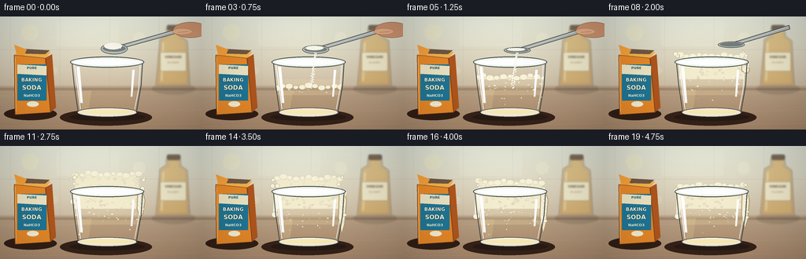
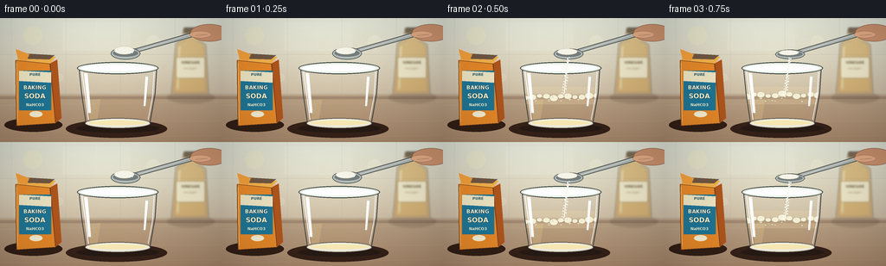

CODING AGENTS AS PIXEL WORLD MODELS
traex/GPT-5.6-Sol · material_0034
点击播放 · 原生 RGB 像素
逐轮保存的候选
回放视频、检查图与代码变化。
每份候选均可单独播放。实际图片检查记录在下方工具轨迹中。
候选 01播放与检查图
点击播放 · 原生 RGB 像素


展开代码变化
--- 上一保存版本
+++ 本次保存版本
@@ -0,0 +1,328 @@
+from pathlib import Path
+import math
+import numpy as np
+from PIL import Image, ImageDraw, ImageFont, ImageFilter
+import artifact_io
+
+# Deterministic, entirely procedural rendering.
+ROOT = Path(__file__).resolve().parent
+W, H, N = 256, 144, 20
+S = 4
+WS, HS = W*S, H*S
+
+FONT_REG = "/usr/share/fonts/truetype/dejavu/DejaVuSans.ttf"
+FONT_BOLD = "/usr/share/fonts/truetype/dejavu/DejaVuSans-Bold.ttf"
+
+def C(seq): return tuple(int(round(v*S)) for v in seq)
+def font(sz, bold=False): return ImageFont.truetype(FONT_BOLD if bold else FONT_REG, sz*S)
+def smooth(x):
+ x=max(0.0,min(1.0,x)); return x*x*(3-2*x)
+def lerp(a,b,t): return a+(b-a)*t
+
+def ellipse(d, xy, fill, outline=None, width=1):
+ d.ellipse(C(xy), fill=fill, outline=outline, width=max(1,int(width*S)))
+def polygon(d, pts, fill, outline=None):
+ d.polygon([C(p) for p in pts], fill=fill)
+ if outline: d.line([C(p) for p in pts+[pts[0]]], fill=outline, width=S)
+def line(d, pts, fill, width=1, joint='curve'):
+ d.line([C(p) for p in pts], fill=fill, width=max(1,int(width*S)), joint=joint)
+def rect(d, xy, fill, outline=None, width=1, radius=0):
+ if radius:
+ d.rounded_rectangle(C(xy), radius=int(radius*S), fill=fill, outline=outline, width=max(1,int(width*S)))
+ else:
+ d.rectangle(C(xy), fill=fill, outline=outline, width=max(1,int(width*S)))
+
+def text_center(d, xy, txt, fnt, fill, stroke=0, stroke_fill=None):
+ x,y=xy; bb=d.textbbox((0,0),txt,font=fnt,stroke_width=stroke*S)
+ d.text(C((x-(bb[2]-bb[0])/S/2,y)),txt,font=fnt,fill=fill,
+ stroke_width=stroke*S,stroke_fill=stroke_fill)
+
+def make_background():
+ # Warm kitchen background rendered with a soft optical falloff.
+ yy, xx = np.mgrid[0:HS,0:WS]
+ top=np.array([224.,229.,217.]); bot=np.array([182.,154.,124.])
+ t=(yy/(HS-1))[...,None]
+ arr=top*(1-t)+bot*t
+ glow=np.exp(-(((xx-125*S)/(125*S))**2+((yy-31*S)/(75*S))**2))[...,None]
+ arr += glow*np.array([16.,15.,10.])
+ rng=np.random.default_rng(392)
+ arr += rng.normal(0,1.15,(HS,WS,1))
+ arr=np.clip(arr,0,255).astype(np.uint8)
+ im=Image.fromarray(arr,'RGB')
+ d=ImageDraw.Draw(im,'RGBA')
+ # backsplash tile seams
+ line(d,[(0,42),(256,42)],(130,141,133,48),.65)
+ line(d,[(0,88),(256,88)],(119,123,113,55),.8)
+ for x in [13,76,139,202]: line(d,[(x,0),(x,89)],(128,139,132,38),.65)
+ # Sunlit window reflection
+ rect(d,(72,5,151,38),(246,251,241,38),radius=3)
+ line(d,[(111,5),(111,38)],(255,255,255,34),.7)
+ # background bokeh
+ for bx,by,br,col in [(38,20,11,(255,248,185,55)),(177,28,8,(255,255,224,52)),(68,69,5,(255,246,202,40))]:
+ ellipse(d,(bx-br,by-br,bx+br,by+br),col)
+ # Counter and back edge
+ rect(d,(0,89,256,144),(139,99,69,80))
+ rect(d,(0,91,256,94),(83,58,43,55))
+ for y,a in [(101,18),(123,14),(140,17)]: line(d,[(0,y),(256,y-4)],(255,232,195,a),1)
+ return im
+
+BG = make_background()
+
+def draw_bottle(im):
+ # Defocused vinegar bottle in background right.
+ lay=Image.new('RGBA',(WS,HS),(0,0,0,0)); d=ImageDraw.Draw(lay,'RGBA')
+ # shadow behind bottle
+ ellipse(d,(193,85,248,99),(61,43,27,43))
+ polygon(d,[(203,29),(211,24),(211,16),(229,16),(230,25),(238,31),(241,88),(198,88)],(190,129,43,96))
+ polygon(d,[(207,29),(215,27),(215,17),(227,17),(227,27),(235,31),(237,85),(202,85)],(219,164,68,125))
+ rect(d,(212,11,229,18),(81,56,33,180),radius=2)
+ line(d,[(207,33),(205,82)],(255,231,150,92),2)
+ rect(d,(203,45,237,70),(245,239,207,205),outline=(117,91,50,135),width=.5,radius=2)
+ text_center(d,(220,49),'VINEGAR',font(4.2,True),(92,67,42,220))
+ text_center(d,(220,57),'5% ACIDITY',font(2.6,False),(117,78,46,190))
+ # blur because bottle is behind focal plane
+ lay=lay.filter(ImageFilter.GaussianBlur(1.05*S))
+ im.alpha_composite(lay)
+
+
+def draw_carton(im):
+ # Baking soda package in sharp foreground, with open top.
+ d=ImageDraw.Draw(im,'RGBA')
+ # contact shadow
+ ellipse(d,(5,116,72,132),(50,31,21,58))
+ # right side and front box
+ polygon(d,[(18,49),(58,53),(64,122),(19,125)],(231,137,41,255))
+ polygon(d,[(57,53),(66,48),(71,116),(64,122)],(176,86,29,255))
+ # open flaps / powder glimpse
+ polygon(d,[(18,49),(29,41),(64,45),(58,53)],(245,179,75,255))
+ polygon(d,[(29,41),(63,43),(57,48),(25,47)],(112,88,67,255))
+ polygon(d,[(21,48),(18,36),(34,42),(30,50)],(244,160,58,255))
+ line(d,[(18,49),(58,53),(64,122),(19,125),(18,49)],(116,61,31,210),.8)
+ # prominent blue label
+ rect(d,(22,61,59,107),(31,118,150,255),radius=1)
+ polygon(d,[(22,61),(59,63),(59,75),(22,73)],(237,229,195,255))
+ text_center(d,(40.5,63),'PURE',font(4.3,True),(30,86,106,255))
+ text_center(d,(40.5,77),'BAKING',font(6.1,True),(250,247,225,255),.35,(17,66,80,220))
+ text_center(d,(40.5,86),'SODA',font(7.7,True),(255,247,211,255),.35,(17,66,80,220))
+ text_center(d,(40.5,98),'NaHCO3',font(4.5,True),(246,240,209,245))
+ # small powder emblem
+ ellipse(d,(34,108,49,115),(247,238,205,235))
+ line(d,[(35,112),(48,112)],(255,255,255,170),.7)
+ # edge highlights
+ line(d,[(19,52),(20,121)],(255,213,128,170),.7)
+
+
+def cup_x_at(y):
+ # Inner glass boundary; cup tapers toward base.
+ frac=max(0,min(1,(y-58)/(123-58)))
+ return 91+8*frac,181-8*frac
+
+
+def draw_saucer_shadow(im):
+ d=ImageDraw.Draw(im,'RGBA')
+ ellipse(d,(76,118,193,139),(54,34,25,52))
+ ellipse(d,(88,123,184,133),(40,27,20,38))
+
+
+def draw_liquid_and_foam(im, frame):
+ d=ImageDraw.Draw(im,'RGBA')
+ # cup interior mask
+ mask=Image.new('L',(WS,HS),0); md=ImageDraw.Draw(mask)
+ md.polygon([C((91,58)),C((181,58)),C((173,123)),C((99,123))],fill=255)
+ # Vinegar: visible amber liquid, disturbed progressively by CO2.
+ liq=Image.new('RGBA',(WS,HS),(0,0,0,0)); ld=ImageDraw.Draw(liq,'RGBA')
+ reaction=smooth((frame-1.7)/7.3)
+ liquid_top=93-2.0*reaction+0.7*math.sin(frame*.9)
+ rect(ld,(86,liquid_top,187,126),(205,142,51,151))
+ # density gradient bands
+ for k in range(10):
+ y=liquid_top+k*3.5
+ rect(ld,(88,y,185,y+4),(228,167+min(k,4)*2,67,14))
+ # broad warm reflection
+ polygon(ld,[(103,liquid_top+2),(116,liquid_top+1),(112,121),(104,121)],(255,226,145,52))
+ im.alpha_composite(Image.composite(liq,Image.new('RGBA',(WS,HS)),mask))
+
+ if frame < 2:
+ # isolated bubbles before the powder reaches the vinegar
+ return
+
+ # Rise rapidly, then settle slightly after the peak.
+ if frame <= 11:
+ rr=smooth((frame-2)/9)
+ foam_top=lerp(91,35.5,rr)
+ density=rr
+ else:
+ ss=smooth((frame-11)/8)
+ foam_top=lerp(35.5,50.5,ss)
+ density=1-.18*ss
+
+ foam=Image.new('RGBA',(WS,HS),(0,0,0,0)); fd=ImageDraw.Draw(foam,'RGBA')
+ rng=np.random.default_rng(8700+frame)
+ # Main cream-colored foam body, wavy top.
+ left,right=cup_x_at(max(58,foam_top))
+ if foam_top < 58:
+ left,right=96,176
+ wave=[]
+ for j in range(11):
+ x=left+(right-left)*j/10
+ y=foam_top + math.sin(j*1.71+frame*.65)*1.4 + rng.uniform(-.7,.7)
+ wave.append((x,y))
+ bodypts=wave+[(178,98),(94,98)]
+ polygon(fd,bodypts,(245,239,208,238))
+ # warm translucent lower foam
+ rect(fd,(91,80,181,100),(244,224,175,55))
+ # Many readable bubbles, larger at top and small in body.
+ bubble_count=int(26+58*density)
+ for i in range(bubble_count):
+ y=rng.uniform(max(foam_top,36),97)
+ lx,rx=cup_x_at(max(58,y))
+ x=rng.uniform(lx+2,rx-2)
+ near=(y-max(foam_top,36))/max(1,97-max(foam_top,36))
+ rad=rng.uniform(.75,2.5)*(1-.3*near)
+ fill=(255,252,231,int(rng.uniform(90,195)))
+ outline=(169,142,93,int(rng.uniform(65,135)))
+ ellipse(fd,(x-rad,y-rad*.72,x+rad,y+rad*.72),fill,outline,.35)
+ if rad>1.35:
+ ellipse(fd,(x-rad*.45,y-rad*.35,x-rad*.05,y-rad*.02),(255,255,255,145))
+ # Irregular round bubbles define the upper silhouette.
+ for j,(x,y) in enumerate(wave):
+ rad=3.1+1.8*((j*7+frame*3)%5)/4
+ ellipse(fd,(x-rad,y-rad*.7,x+rad,y+rad*.8),(250,246,220,246),(174,148,101,120),.4)
+ ellipse(fd,(x-rad*.34,y-rad*.35,x,y-rad*.03),(255,255,255,175))
+ # constrain inner portion to cup, but permit mound above the rim
+ inner=Image.composite(foam,Image.new('RGBA',(WS,HS)),mask)
+ im.alpha_composite(inner)
+ if foam_top < 59:
+ # mound above cup rim
+ above_mask=Image.new('L',(WS,HS),0); am=ImageDraw.Draw(above_mask)
+ am.rectangle(C((88,25,184,59)),fill=255)
+ im.alpha_composite(Image.composite(foam,Image.new('RGBA',(WS,HS)),above_mask))
+
+ # Escaping perimeter bubbles and overflow at the vigorous peak.
+ if frame >= 8:
+ od=ImageDraw.Draw(im,'RGBA')
+ peak=math.sin(min(1,(frame-7)/10)*math.pi*.82)
+ rng=np.random.default_rng(1210+frame)
+ # loose bubbles around crown
+ for i in range(8+(frame%4)):
+ side=-1 if i%2==0 else 1
+ x=(98 if side<0 else 174)+side*rng.uniform(0,9)
+ y=rng.uniform(max(33,foam_top-5),62)
+ r=rng.uniform(1.0,3.0)
+ ellipse(od,(x-r,y-r,x+r,y+r),(249,246,222,220),(151,126,90,115),.35)
+ # right-side flowing rope of foam (peak then remains as residue)
+ drip_len=lerp(3,43,smooth((frame-8)/6))
+ if frame>15: drip_len=lerp(43,36,smooth((frame-15)/4))
+ pts=[(171,54),(181,57),(184,69),(181.5,70+drip_len*.68),(178,69+drip_len),(174,67+drip_len*.55),(175,58)]
+ polygon(od,pts,(244,238,211,225),(181,151,103,100))
+ for k in range(5):
+ y=62+k*drip_len/5
+ x=180+math.sin(k*2.3+frame)*1.1
+ r=2.0+((k+frame)%3)*.45
+ ellipse(od,(x-r,y-r*.7,x+r,y+r*.7),(252,248,226,235),(169,142,99,100),.35)
+ # small left spill begins later
+ if frame>=11:
+ l=smooth((frame-10)/5)*21
+ polygon(od,[(98,54),(92,58),(91,66+l),(95,69+l),(99,59)],(247,242,218,214))
+ ellipse(od,(89,65+l,97,72+l),(250,246,224,220),(158,133,94,100),.35)
+
+
+def draw_glass(im, frame):
+ d=ImageDraw.Draw(im,'RGBA')
+ # Bottom refraction and cup base.
+ ellipse(d,(98,116,174,128),(244,237,220,45),(78,76,69,150),.75)
+ ellipse(d,(101,118,171,125),(255,240,185,35),(255,255,255,105),.55)
+ # Glass walls: dark outer refraction and bright inner edge.
+ line(d,[(91,57),(94,87),(99,121)],(64,71,70,135),1.15)
+ line(d,[(181,57),(179,88),(173,122)],(57,66,66,150),1.15)
+ line(d,[(94,58),(98,88),(102,118)],(255,255,255,155),1.0)
+ line(d,[(178,60),(176,92),(171,118)],(255,255,255,115),.75)
+ # rim is partly occluded at peak but remains readable
+ ellipse(d,(89,51,183,65),(236,243,234,23),(55,63,61,180),1.0)
+ ellipse(d,(93,54,179,62),(255,255,255,18),(248,255,251,170),.65)
+ # vertical glare strips
+ polygon(d,[(97,64),(101,64),(105,110),(102,110)],(255,255,255,50))
+ polygon(d,[(168,68),(171,68),(168,102),(166,102)],(255,255,255,35))
+ # tiny condensation flecks on glass
+ rng=np.random.default_rng(500+frame)
+ if frame>=4:
+ for _ in range(10):
+ x=rng.uniform(96,176); y=rng.uniform(66,113); r=rng.uniform(.25,.65)
+ ellipse(d,(x-r,y-r,x+r,y+r),(255,255,255,75))
+
+
+def draw_powder_and_spoon(im, frame):
+ d=ImageDraw.Draw(im,'RGBA')
+ # Spoon rotates downward during addition, then lifts toward the right.
+ if frame <= 8:
+ if frame<2: tilt=0
+ elif frame<=5: tilt=(frame-1)/4
+ else: tilt=1
+ retreat=max(0,frame-6)*8
+ bowl=(145+retreat,41-retreat*.45+tilt*2)
+ handle_end=(230+retreat*.3,17-retreat*.22)
+ vx=handle_end[0]-bowl[0]; vy=handle_end[1]-bowl[1]
+ L=math.hypot(vx,vy); ux,uy=vx/L,vy/L; px,py=-uy,ux
+ # metal handle
+ polygon(d,[(bowl[0]+ux*5+px*2,bowl[1]+uy*5+py*2),
+ (handle_end[0]+px*2.3,handle_end[1]+py*2.3),
+ (handle_end[0]-px*2.3,handle_end[1]-py*2.3),
+ (bowl[0]+ux*4-px*2,bowl[1]+uy*4-py*2)],(179,185,181,255),(80,87,85,190))
+ line(d,[(bowl[0]+6,bowl[1]-1),(handle_end[0]-2,handle_end[1]-1)],(255,255,255,135),.7)
+ # bowl, slightly narrower as it turns edge-on
+ bh=7.0-3.1*tilt
+ ellipse(d,(bowl[0]-17,bowl[1]-bh,bowl[0]+17,bowl[1]+bh),(183,191,189,255),(67,75,73,220),.8)
+ ellipse(d,(bowl[0]-14.5,bowl[1]-bh*.65,bowl[0]+14.5,bowl[1]+bh*.55),(118,127,126,170))
+ # mound remains until emptied
+ mound=max(0,1-(frame-1)/5)
+ if mound>0:
+ ellipse(d,(bowl[0]-13,bowl[1]-5.2*mound-2,bowl[0]+10,bowl[1]+1),(250,248,235,255),(190,181,159,150),.4)
+ for q in range(7):
+ x=bowl[0]-10+q*3.0; y=bowl[1]-2.5-math.sin(q*.9)*mound*2
+ ellipse(d,(x-.45,y-.45,x+.45,y+.45),(255,255,250,255))
+ # Cropped hand holding spoon
+ if frame<7:
+ ellipse(d,(220,7,264,27),(205,148,112,245),(141,93,67,120),.5)
+ ellipse(d,(219,15,244,23),(229,174,135,245),(143,91,65,110),.45)
+ line(d,[(226,20),(239,19)],(125,80,60,90),.5)
+
+ # Falling sodium bicarbonate, frames 2â6.
+ if 2 <= frame <= 6:
+ rng=np.random.default_rng(901+frame)
+ strength=1-abs(frame-4)/3.2
+ source_x=145+(max(0,frame-6)*8)
+ # soft continuous stream plus distinct grains
+ line(d,[(source_x-1,46),(139+math.sin(frame),87)],(249,247,232,int(125*strength)),1.2)
+ for i in range(42):
+ frac=((i/42)+(frame*.19))%1
+ y=45+frac*46
+ x=lerp(source_x,139,frac)+math.sin(i*2.1+frame)* (1.2+frac*1.2)
+ r=.35+((i*17)%7)/12
+ ellipse(d,(x-r,y-r,x+r,y+r),(253,251,240,int(170+80*strength)))
+ # A few airborne grains just after pouring.
+ if frame==7:
+ for x,y in [(139,70),(136,78),(142,64),(140,84)]: ellipse(d,(x-.5,y-.5,x+.5,y+.5),(252,250,237,180))
+
+
+def render(frame):
+ im=BG.convert('RGBA')
+ draw_bottle(im)
+ draw_saucer_shadow(im)
+ # cup content first, then carton foreground and powder apparatus
+ draw_liquid_and_foam(im,frame)
+ draw_glass(im,frame)
+ draw_carton(im)
+ draw_powder_and_spoon(im,frame)
+ # Cinematic vignette and fine grain at final resolution.
+ rgb=im.convert('RGB').resize((W,H),Image.Resampling.LANCZOS)
+ arr=np.asarray(rgb).astype(np.float32)
+ yy,xx=np.mgrid[0:H,0:W]
+ vign=1-.105*((xx-W/2)/(W/2))**2-.075*((yy-H/2)/(H/2))**2
+ arr*=vign[...,None]
+ rng=np.random.default_rng(14000+frame)
+ arr += rng.normal(0,.42,arr.shape[:2])[...,None]
+ return np.clip(arr,0,255).astype(np.uint8)
+
+frames=np.stack([render(i) for i in range(N)],axis=0)
+artifact_io.save(frames,ROOT)
+print('saved',frames.shape,frames.dtype,'range',frames.min(),frames.max())
可观测工具轨迹
实际执行的命令与返回图片。
命令 1exit 0
/bin/bash -lc "cat prompt.txt && printf '\\n--- GENERATION_RULES.md ---\\n' && cat GENERATION_RULES.md && printf '\\n--- task_spec.json ---\\n' && cat task_spec.json"
命令 2exit 1
/bin/bash -lc "find . -maxdepth 3 -type f -printf '%p\\n' | sort && printf '\\n--- tools ---\\n' && command -v ffmpeg && command -v ffprobe && command -v python3"
命令 3exit 0
/bin/bash -lc "cat artifact_io.py && python3 - <<'PY' import sys mods=['numpy','PIL','cv2','imageio'] for m in mods: try: x=__import__(m); print(m,'OK',getattr(x,'__version__','')) except Exception as e: print(m,'NO',e) PY"
命令 4exit 0
/bin/bash -lc "cat > generate.py <<'PY'
from pathlib import Path
import math
import numpy as np
from PIL import Image, ImageDraw, ImageFont, ImageFilter
import artifact_io
# Deterministic, entirely procedural rendering.
ROOT = Path(__file__).resolve().parent
W, H, N = 256, 144, 20
S = 4
WS, HS = W*S, H*S
FONT_REG = \"/usr/share/fonts/truetype/dejavu/DejaVuSans.ttf\"
FONT_BOLD = \"/usr/share/fonts/truetype/dejavu/DejaVuSans-Bold.ttf\"
def C(seq): return tuple(int(round(v*S)) for v in seq)
def font(sz, bold=False): return ImageFont.truetype(FONT_BOLD if bold else FONT_REG, sz*S)
def smooth(x):
x=max(0.0,min(1.0,x)); return x*x*(3-2*x)
def lerp(a,b,t): return a+(b-a)*t
def ellipse(d, xy, fill, outline=None, width=1):
d.ellipse(C(xy), fill=fill, outline=outline, width=max(1,int(width*S)))
def polygon(d, pts, fill, outline=None):
d.polygon([C(p) for p in pts], fill=fill)
if outline: d.line([C(p) for p in pts+[pts[0]]], fill=outline, width=S)
def line(d, pts, fill, width=1, joint='curve'):
d.line([C(p) for p in pts], fill=fill, width=max(1,int(width*S)), joint=joint)
def rect(d, xy, fill, outline=None, width=1, radius=0):
if radius:
d.rounded_rectangle(C(xy), radius=int(radius*S), fill=fill, outline=outline, width=max(1,int(width*S)))
else:
d.rectangle(C(xy), fill=fill, outline=outline, width=max(1,int(width*S)))
def text_center(d, xy, txt, fnt, fill, stroke=0, stroke_fill=None):
x,y=xy; bb=d.textbbox((0,0),txt,font=fnt,stroke_width=stroke*S)
d.text(C((x-(bb[2]-bb[0])/S/2,y)),txt,font=fnt,fill=fill,
stroke_width=stroke*S,stroke_fill=stroke_fill)
def make_background():
# Warm kitchen background rendered with a soft optical falloff.
yy, xx = np.mgrid[0:HS,0:WS]
top=np.array([224.,229.,217.]); bot=np.array([182.,154.,124.])
t=(yy/(HS-1))[...,None]
arr=top*(1-t)+bot*t
glow=np.exp(-(((xx-125*S)/(125*S))**2+((yy-31*S)/(75*S))**2))[...,None]
arr += glow*np.array([16.,15.,10.])
rng=np.random.default_rng(392)
arr += rng.normal(0,1.15,(HS,WS,1))
arr=np.clip(arr,0,255).astype(np.uint8)
im=Image.fromarray(arr,'RGB')
d=ImageDraw.Draw(im,'RGBA')
# backsplash tile seams
line(d,[(0,42),(256,42)],(130,141,133,48),.65)
line(d,[(0,88),(256,88)],(119,123,113,55),.8)
for x in [13,76,139,202]: line(d,[(x,0),(x,89)],(128,139,132,38),.65)
# Sunlit window reflection
rect(d,(72,5,151,38),(246,251,241,38),radius=3)
line(d,[(111,5),(111,38)],(255,255,255,34),.7)
# background bokeh
for bx,by,br,col in [(38,20,11,(255,248,185,55)),(177,28,8,(255,255,224,52)),(68,69,5,(255,246,202,40))]:
ellipse(d,(bx-br,by-br,bx+br,by+br),col)
# Counter and back edge
rect(d,(0,89,256,144),(139,99,69,80))
rect(d,(0,91,256,94),(83,58,43,55))
for y,a in [(101,18),(123,14),(140,17)]: line(d,[(0,y),(256,y-4)],(255,232,195,a),1)
return im
BG = make_background()
def draw_bottle(im):
# Defocused vinegar bottle in background right.
lay=Image.new('RGBA',(WS,HS),(0,0,0,0)); d=ImageDraw.Draw(lay,'RGBA')
# shadow behind bottle
ellipse(d,(193,85,248,99),(61,43,27,43))
polygon(d,[(203,29),(211,24),(211,16),(229,16),(230,25),(238,31),(241,88),(198,88)],(190,129,43,96))
polygon(d,[(207,29),(215,27),(215,17),(227,17),(227,27),(235,31),(237,85),(202,85)],(219,164,68,125))
rect(d,(212,11,229,18),(81,56,33,180),radius=2)
line(d,[(207,33),(205,82)],(255,231,150,92),2)
rect(d,(203,45,237,70),(245,239,207,205),outline=(117,91,50,135),width=.5,radius=2)
text_center(d,(220,49),'VINEGAR',font(4.2,True),(92,67,42,220))
text_center(d,(220,57),'5% ACIDITY',font(2.6,False),(117,78,46,190))
# blur because bottle is behind focal plane
lay=lay.filter(ImageFilter.GaussianBlur(1.05*S))
im.alpha_composite(lay)
def draw_carton(im):
# Baking soda package in sharp foreground, with open top.
d=ImageDraw.Draw(im,'RGBA')
# contact shadow
ellipse(d,(5,116,72,132),(50,31,21,58))
# right side and front box
polygon(d,[(18,49),(58,53),(64,122),(19,125)],(231,137,41,255))
polygon(d,[(57,53),(66,48),(71,116),(64,122)],(176,86,29,255))
# open flaps / powder glimpse
polygon(d,[(18,49),(29,41),(64,45),(58,53)],(245,179,75,255))
polygon(d,[(29,41),(63,43),(57,48),(25,47)],(112,88,67,255))
polygon(d,[(21,48),(18,36),(34,42),(30,50)],(244,160,58,255))
line(d,[(18,49),(58,53),(64,122),(19,125),(18,49)],(116,61,31,210),.8)
# prominent blue label
rect(d,(22,61,59,107),(31,118,150,255),radius=1)
polygon(d,[(22,61),(59,63),(59,75),(22,73)],(237,229,195,255))
text_center(d,(40.5,63),'PURE',font(4.3,True),(30,86,106,255))
text_center(d,(40.5,77),'BAKING',font(6.1,True),(250,247,225,255),.35,(17,66,80,220))
text_center(d,(40.5,86),'SODA',font(7.7,True),(255,247,211,255),.35,(17,66,80,220))
text_center(d,(40.5,98),'NaHCO3',font(4.5,True),(246,240,209,245))
# small powder emblem
ellipse(d,(34,108,49,115),(247,238,205,235))
line(d,[(35,112),(48,112)],(255,255,255,170),.7)
# edge highlights
line(d,[(19,52),(20,121)],(255,213,128,170),.7)
def cup_x_at(y):
# Inner glass boundary; cup tapers toward base.
frac=max(0,min(1,(y-58)/(123-58)))
return 91+8*frac,181-8*frac
def draw_saucer_shadow(im):
d=ImageDraw.Draw(im,'RGBA')
ellipse(d,(76,118,193,139),(54,34,25,52))
ellipse(d,(88,123,184,133),(40,27,20,38))
def draw_liquid_and_foam(im, frame):
d=ImageDraw.Draw(im,'RGBA')
# cup interior mask
mask=Image.new('L',(WS,HS),0); md=ImageDraw.Draw(mask)
md.polygon([C((91,58)),C((181,58)),C((173,123)),C((99,123))],fill=255)
# Vinegar: visible amber liquid, disturbed progressively by CO2.
liq=Image.new('RGBA',(WS,HS),(0,0,0,0)); ld=ImageDraw.Draw(liq,'RGBA')
reaction=smooth((frame-1.7)/7.3)
liquid_top=93-2.0*reaction+0.7*math.sin(frame*.9)
rect(ld,(86,liquid_top,187,126),(205,142,51,151))
# density gradient bands
for k in range(10):
y=liquid_top+k*3.5
rect(ld,(88,y,185,y+4),(228,167+min(k,4)*2,67,14))
# broad warm reflection
polygon(ld,[(103,liquid_top+2),(116,liquid_top+1),(112,121),(104,121)],(255,226,145,52))
im.alpha_composite(Image.composite(liq,Image.new('RGBA',(WS,HS)),mask))
if frame < 2:
# isolated bubbles before the powder reaches the vinegar
return
# Rise rapidly, then settle slightly after the peak.
if frame <= 11:
rr=smooth((frame-2)/9)
foam_top=lerp(91,35.5,rr)
density=rr
else:
ss=smooth((frame-11)/8)
foam_top=lerp(35.5,50.5,ss)
density=1-.18*ss
foam=Image.new('RGBA',(WS,HS),(0,0,0,0)); fd=ImageDraw.Draw(foam,'RGBA')
rng=np.random.default_rng(8700+frame)
# Main cream-colored foam body, wavy top.
left,right=cup_x_at(max(58,foam_top))
if foam_top < 58:
left,right=96,176
wave=[]
for j in range(11):
x=left+(right-left)*j/10
y=foam_top + math.sin(j*1.71+frame*.65)*1.4 + rng.uniform(-.7,.7)
wave.append((x,y))
bodypts=wave+[(178,98),(94,98)]
polygon(fd,bodypts,(245,239,208,238))
# warm translucent lower foam
rect(fd,(91,80,181,100),(244,224,175,55))
# Many readable bubbles, larger at top and small in body.
bubble_count=int(26+58*density)
for i in range(bubble_count):
y=rng.uniform(max(foam_top,36),97)
lx,rx=cup_x_at(max(58,y))
x=rng.uniform(lx+2,rx-2)
near=(y-max(foam_top,36))/max(1,97-max(foam_top,36))
rad=rng.uniform(.75,2.5)*(1-.3*near)
fill=(255,252,231,int(rng.uniform(90,195)))
outline=(169,142,93,int(rng.uniform(65,135)))
ellipse(fd,(x-rad,y-rad*.72,x+rad,y+rad*.72),fill,outline,.35)
if rad>1.35:
ellipse(fd,(x-rad*.45,y-rad*.35,x-rad*.05,y-rad*.02),(255,255,255,145))
# Irregular round bubbles define the upper silhouette.
for j,(x,y) in enumerate(wave):
rad=3.1+1.8*((j*7+frame*3)%5)/4
ellipse(fd,(x-rad,y-rad*.7,x+rad,y+rad*.8),(250,246,220,246),(174,148,101,120),.4)
ellipse(fd,(x-rad*.34,y-rad*.35,x,y-rad*.03),(255,255,255,175))
# constrain inner portion to cup, but permit mound above the rim
inner=Image.composite(foam,Image.new('RGBA',(WS,HS)),mask)
im.alpha_composite(inner)
if foam_top < 59:
# mound above cup rim
above_mask=Image.new('L',(WS,HS),0); am=ImageDraw.Draw(above_mask)
am.rectangle(C((88,25,184,59)),fill=255)
im.alpha_composite(Image.composite(foam,Image.new('RGBA',(WS,HS)),above_mask))
# Escaping perimeter bubbles and overflow at the vigorous peak.
if frame >= 8:
od=ImageDraw.Draw(im,'RGBA')
peak=math.sin(min(1,(frame-7)/10)*math.pi*.82)
rng=np.random.default_rng(1210+frame)
# loose bubbles around crown
for i in range(8+(frame%4)):
side=-1 if i%2==0 else 1
x=(98 if side<0 else 174)+side*rng.uniform(0,9)
y=rng.uniform(max(33,foam_top-5),62)
r=rng.uniform(1.0,3.0)
ellipse(od,(x-r,y-r,x+r,y+r),(249,246,222,220),(151,126,90,115),.35)
# right-side flowing rope of foam (peak then remains as residue)
drip_len=lerp(3,43,smooth((frame-8)/6))
if frame>15: drip_len=lerp(43,36,smooth((frame-15)/4))
pts=[(171,54),(181,57),(184,69),(181.5,70+drip_len*.68),(178,69+drip_len),(174,67+drip_len*.55),(175,58)]
polygon(od,pts,(244,238,211,225),(181,151,103,100))
for k in range(5):
y=62+k*drip_len/5
x=180+math.sin(k*2.3+frame)*1.1
r=2.0+((k+frame)%3)*.45
ellipse(od,(x-r,y-r*.7,x+r,y+r*.7),(252,248,226,235),(169,142,99,100),.35)
# small left spill begins later
if frame>=11:
l=smooth((frame-10)/5)*21
polygon(od,[(98,54),(92,58),(91,66+l),(95,69+l),(99,59)],(247,242,218,214))
ellipse(od,(89,65+l,97,72+l),(250,246,224,220),(158,133,94,100),.35)
def draw_glass(im, frame):
d=ImageDraw.Draw(im,'RGBA')
# Bottom refraction and cup base.
ellipse(d,(98,116,174,128),(244,237,220,45),(78,76,69,150),.75)
ellipse(d,(101,118,171,125),(255,240,185,35),(255,255,255,105),.55)
# Glass walls: dark outer refraction and bright inner edge.
line(d,[(91,57),(94,87),(99,121)],(64,71,70,135),1.15)
line(d,[(181,57),(179,88),(173,122)],(57,66,66,150),1.15)
line(d,[(94,58),(98,88),(102,118)],(255,255,255,155),1.0)
line(d,[(178,60),(176,92),(171,118)],(255,255,255,115),.75)
# rim is partly occluded at peak but remains readable
ellipse(d,(89,51,183,65),(236,243,234,23),(55,63,61,180),1.0)
ellipse(d,(93,54,179,62),(255,255,255,18),(248,255,251,170),.65)
# vertical glare strips
polygon(d,[(97,64),(101,64),(105,110),(102,110)],(255,255,255,50))
polygon(d,[(168,68),(171,68),(168,102),(166,102)],(255,255,255,35))
# tiny condensation flecks on glass
rng=np.random.default_rng(500+frame)
if frame>=4:
for _ in range(10):
x=rng.uniform(96,176); y=rng.uniform(66,113); r=rng.uniform(.25,.65)
ellipse(d,(x-r,y-r,x+r,y+r),(255,255,255,75))
def draw_powder_and_spoon(im, frame):
d=ImageDraw.Draw(im,'RGBA')
# Spoon rotates downward during addition, then lifts toward the right.
if frame <= 8:
if frame<2: tilt=0
elif frame<=5: tilt=(frame-1)/4
else: tilt=1
retreat=max(0,frame-6)*8
bowl=(145+retreat,41-retreat*.45+tilt*2)
handle_end=(230+retreat*.3,17-retreat*.22)
vx=handle_end[0]-bowl[0]; vy=handle_end[1]-bowl[1]
L=math.hypot(vx,vy); ux,uy=vx/L,vy/L; px,py=-uy,ux
# metal handle
polygon(d,[(bowl[0]+ux*5+px*2,bowl[1]+uy*5+py*2),
(handle_end[0]+px*2.3,handle_end[1]+py*2.3),
(handle_end[0]-px*2.3,handle_end[1]-py*2.3),
(bowl[0]+ux*4-px*2,bowl[1]+uy*4-py*2)],(179,185,181,255),(80,87,85,190))
line(d,[(bowl[0]+6,bowl[1]-1),(handle_end[0]-2,handle_end[1]-1)],(255,255,255,135),.7)
# bowl, slightly narrower as it turns edge-on
bh=7.0-3.1*tilt
ellipse(d,(bowl[0]-17,bowl[1]-bh,bowl[0]+17,bowl[1]+bh),(183,191,189,255),(67,75,73,220),.8)
ellipse(d,(bowl[0]-14.5,bowl[1]-bh*.65,bowl[0]+14.5,bowl[1]+bh*.55),(118,127,126,170))
# mound remains until emptied
mound=max(0,1-(frame-1)/5)
if mound>0:
ellipse(d,(bowl[0]-13,bowl[1]-5.2*mound-2,bowl[0]+10,bowl[1]+1),(250,248,235,255),(190,181,159,150),.4)
for q in range(7):
x=bowl[0]-10+q*3.0; y=bowl[1]-2.5-math.sin(q*.9)*mound*2
ellipse(d,(x-.45,y-.45,x+.45,y+.45),(255,255,250,255))
# Cropped hand holding spoon
if frame<7:
ellipse(d,(220,7,264,27),(205,148,112,245),(141,93,67,120),.5)
ellipse(d,(219,15,244,23),(229,174,135,245),(143,91,65,110),.45)
line(d,[(226,20),(239,19)],(125,80,60,90),.5)
# Falling sodium bicarbonate, frames 2â6.
if 2 <= frame <= 6:
rng=np.random.default_rng(901+frame)
strength=1-abs(frame-4)/3.2
source_x=145+(max(0,frame-6)*8)
# soft continuous stream plus distinct grains
line(d,[(source_x-1,46),(139+math.sin(frame),87)],(249,247,232,int(125*strength)),1.2)
for i in range(42):
frac=((i/42)+(frame*.19))%1
y=45+frac*46
x=lerp(source_x,139,frac)+math.sin(i*2.1+frame)* (1.2+frac*1.2)
r=.35+((i*17)%7)/12
ellipse(d,(x-r,y-r,x+r,y+r),(253,251,240,int(170+80*strength)))
# A few airborne grains just after pouring.
if frame==7:
for x,y in [(139,70),(136,78),(142,64),(140,84)]: ellipse(d,(x-.5,y-.5,x+.5,y+.5),(252,250,237,180))
def render(frame):
im=BG.convert('RGBA')
draw_bottle(im)
draw_saucer_shadow(im)
# cup content first, then carton foreground and powder apparatus
draw_liquid_and_foam(im,frame)
draw_glass(im,frame)
draw_carton(im)
draw_powder_and_spoon(im,frame)
# Cinematic vignette and fine grain at final resolution.
rgb=im.convert('RGB').resize((W,H),Image.Resampling.LANCZOS)
arr=np.asarray(rgb).astype(np.float32)
yy,xx=np.mgrid[0:H,0:W]
vign=1-.105*((xx-W/2)/(W/2))**2-.075*((yy-H/2)/(H/2))**2
arr*=vign[...,None]
rng=np.random.default_rng(14000+frame)
arr += rng.normal(0,.42,arr.shape[:2])[...,None]
return np.clip(arr,0,255).astype(np.uint8)
frames=np.stack([render(i) for i in range(N)],axis=0)
artifact_io.save(frames,ROOT)
print('saved',frames.shape,frames.dtype,'range',frames.min(),frames.max())
PY
python3 generate.py"命令 5exit 0
/bin/bash -lc "python3 - <<'PY'
from pathlib import Path
import json, numpy as np
from PIL import Image
p=Path('.')
spec=json.loads(Path('task_spec.json').read_text())
z=np.load('pixels.npz')['pixels']
assert z.shape==(spec['height'],spec['width'],spec['frames'])
assert z.dtype==np.uint32
ims=np.stack([np.array(Image.open(f'frames/{i:02d}.png').convert('RGB')) for i in range(spec['frames'])])
assert ims.shape==(20,144,256,3) and ims.dtype==np.uint8
packed=((ims[...,0].astype(np.uint32)<<16)|(ims[...,1].astype(np.uint32)<<8)|ims[...,2])
assert np.array_equal(packed.transpose(1,2,0),z)
mad=np.abs(np.diff(ims.astype(np.int16),axis=0)).mean(axis=(1,2,3))
changed=(np.diff(ims.astype(np.int16),axis=0)"'!=0).any(axis=3).mean(axis=(1,2))
print('"'shape/dtype:',ims.shape,ims.dtype)
print('per-transition MAD:',np.round(mad,2).tolist())
print('changed pixel fractions:',np.round(changed,3).tolist())
print('brightness:',np.round(ims.mean(axis=(1,2,3)),1).tolist())
print('artifacts:',[(x.name,x.stat().st_size) for x in [Path('pixels.npz'),Path('inspection.png'),Path('transition_check.png'),Path('index.html')]])
PY"命令 6exit 0
/bin/bash -lc "python3 -m py_compile generate.py artifact_io.py && find frames -maxdepth 1 -type f -name '*.png' | sort | wc -l && git status --short 2>/dev/null || true"
保存候选 1 份；完成命令 6 次；可验证图片返回 0 张。原始 API 响应与完整日志保留在本地。